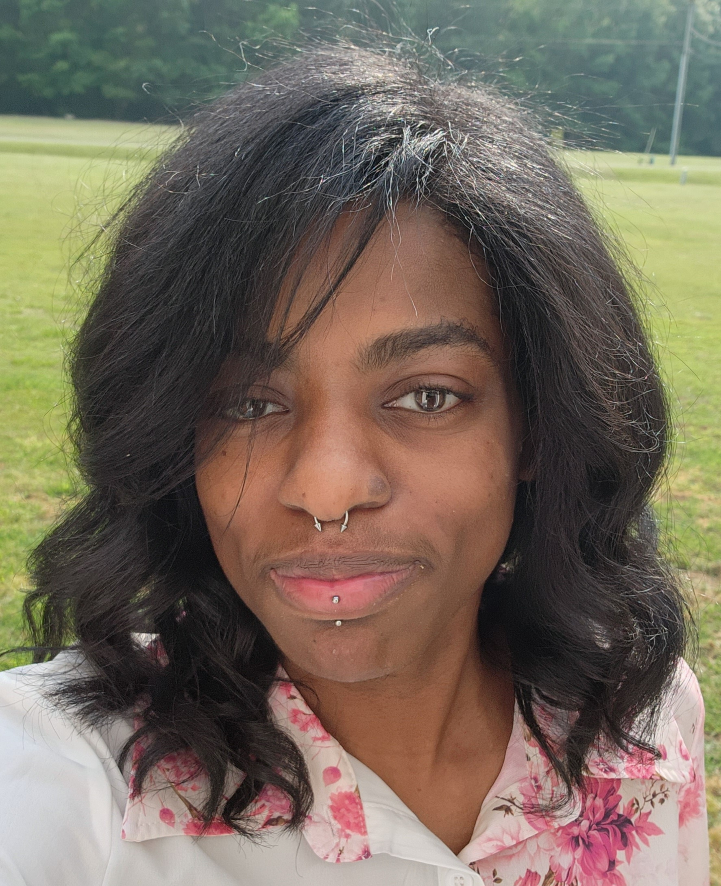

Kaylah Verity
- About Me
- Hi, I’m Kaylah. I came to computer science from outside the field and earned a B.S. in Computer Science
which means I’m equal parts curious and stubborn about learning how things work. Java is my comfort zone:
it’s the language I reach for backend systems, algorithms, and anything that needs to be solid and reliable.
Lately the front end has caught my attention: JavaScript, HTML, and CSS so that my backend projects can
actually be used and enjoyed in the browser. I’m also expanding my toolbelt with Python and C++ and getting
my feet wet in AI/ML (still early days, but excited by the possibilities).
I like building things end to end: clean APIs, dependable services, and frontends that don’t get in the way.
When I’m not learning a new framework or debugging that one weird bug that makes the compiler upset, you’ll
find me playing video games, learning more about guitar or grabbing an iced caramel mocha in town.
Education:
- Southern New Hampshire University:
-
Bachelor of Science in Computer Science
2023 - 2025
- Richard Bland College:
-
Associate of Science in Science
2017 - 2019
Interests:
- 🖥️ Software Engineering
- 🖱️ Data Science
- 🎮 Video Games
- 💻 3D Modeling